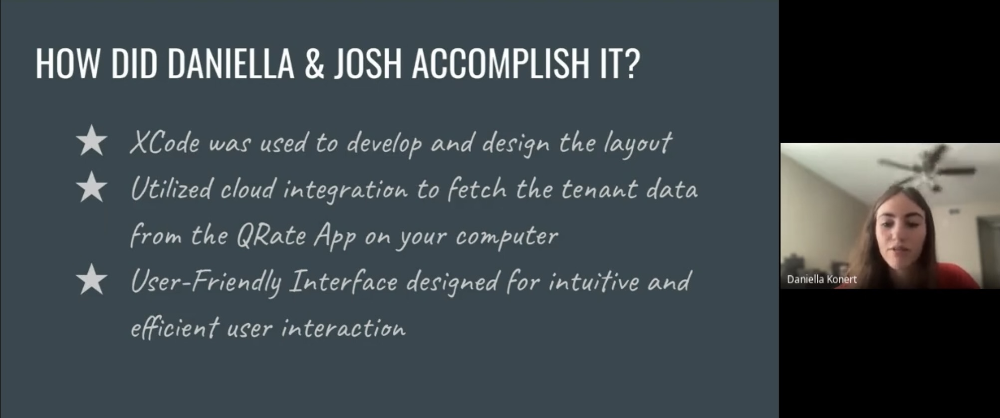

- DKPROJECTS -
> Welcome to DKPROJECTS!
> Discover my professional journey and work experience through my interactive
website crafted with HTML, CSS, and JavaScript.
Whether you're an employer or simply interested, I invite you to browse and
learn more about me and my work.
> **************************** MAIN MENU ****************************
1. Enter "1" to learn more about me
2. Enter "2" to learn about my work expirence at Tulip Retail
3. Enter "3" to see a copy of my resume
4. Enter "4" to get my contact information
*******************************************************************
> TULIP RETAIL 🌷
> MY ROLE
I worked as a Software Developer Co-op on Tulip's Clienteling team, where proficiency in multiple programming languages, including PHP, JavaScript, MySQL, and HTML, was crucial. Most of these skills were acquired during my academic studies, along with expertise in version control systems like Git. Throughout my recent term at Tulip, my primary focus centered around debugging, allowing me to become well-acquainted with the diverse technologies integrated into the Clienteling platform. This role often required close collaboration with various team members, including product managers, designers, and seasoned developers, to craft comprehensive solutions encompassing database management, API development, and user interface design. I also actively contributed to full-stack development projects, significantly expanding my skill set. Tulip further provided me with invaluable opportunities to explore and apply additional programming languages, such as Swift and GoLang, and to immerse myself in iOS development. This experience greatly enriched my capabilities and contributed significantly to my growth as a software developer.
> GOALS
- One of my personal goals during my time at Tulip was to learn more about the iOS side of the company. With a long-standing interest in iOS development, I saw this as an opportunity to expand my skill set and knowledge. This aligns with my career aspirations, offering valuable insights and expertise that will contribute to my growth as a software developer.
- I aimed to take leadership in improving documentation at Tulip, recognizing its crucial role in enhancing understanding among team members. This goal aligned with my manager's emphasis on the importance of maintaining well-documented code, which contributes to the overall efficiency and effectiveness of our projects.
- A personal goal of mine was to continually enhance my communication skills, recognizing their critical importance in a workplace environment. I aimed to ensure that my communication remained effective, enabling me to convey ideas, collaborate with team members, and contribute to the success of our projects. This goal reflected my commitment to becoming a more proficient and valuable team member at Tulip.
- I set a goal to attend at least 60% of the Learning Initiative discussions at Tulip, which were established by the company to foster continuous learning in the workplace. My aim was not only to engage with fellow Tulip members from different teams but also to expand my knowledge by actively participating in discussions alongside video content and readings.
- Collaborate with a more experienced team member on a feature project, aiming to gain valuable insights and hands-on experience in both development and design aspects. This initiative allows me to actively engage with and learn from a seasoned developer while contributing to the design and build of a feature within the workplace. It reflects my commitment to continuous growth and development in a real-world software development setting.
> REFLECTIONS
- During Tulip's company hack day, I teamed up with a member of the iOS team, and it proved to be an incredible learning experience. Collaboratively, we employed pair programming to seamlessly integrate an application into the Apple Watch, enhancing the accessibility of the Tulip app on iPhone and iPad devices. Our development journey involved utilizing Swift and XCode, while leveraging cloud integration to retrieve data efficiently. This inspiring opportunity further fueled my interest in iOS, prompting me to initiate weekly meetings with that same member to learn more.
- During the course of my work on a ticket, I encountered a situation where a crucial component for development on one of the platforms was omitted from the documentation. After successfully completing the task, I took the initiative to update the readme file. Shortly after, a team member who later worked on the same platform found the updated documentation immensely helpful. While collaborating with a member of the iOS team, I noticed their strong emphasis on documentation during project work. This experience shed light on the importance of meticulous documentation in our development process. He also imparted valuable lessons on how to simplify and streamline the documentation process for maximum efficiency, which is something I will be able to utilize throughout the rest of my career.
- Throughout the term, I demonstrated strong communication skills during presentations on hack day and while leading team meetings. I felt confident, maintained clarity, and avoided getting stuck. However, I've noticed that I can sometimes struggle to explain the process I followed to arrive at a solution or the various steps I took when troubleshooting a bug to those who are unfamiliar with the issue. This is an aspect I am actively addressing and aiming to improve.
- I have actively participated in 60% of these learning initiatives and have gained a lot from doing so. They have provided valuable insights into avoiding common software-related mistakes, exploring diverse technologies, and understanding the strategies companies, including Tulip, are employing to progress. Additionally, these initiatives have allowed me to connect with individuals beyond my immediate team, emphasizing the company's commitment to fostering collective learning. Attending these sessions has unquestionably been a highlight of my week, equipping me with knowledge and skills that I can carry forward throughout my career.
- Regrettably, this hasn't occurred as of now. However, it's probable that I'll collaborate with my manager, Lindsay, on a feature during my upcoming term. This past term, I've been assigned to resolve numerous bugs across different aspects of clienteling. This has occasionally provided me with the opportunity to engage with members of other teams, offering me valuable insights and helping me refine my future career goals as a developer.

Hackday, Tulip
> CONCLUSION

My journey at Tulip Retail has been nothing short of exceptional.
The company's commitment to fostering an open and communicative work environment,
coupled with a strong emphasis on idea generation and transparency, made every day a rewarding experience.
Tulip's dedication to growth and learning, exemplified through initiatives like Hack Days, ReadQueues, and
VidQueues, further fueled my passion for continuous improvement and expansion of knowledge.
Throughout my time at Tulip, I have learned invaluable skills and insights that will undoubtedly
shape my career as a developer. The collaborative and inclusive culture at Tulip has not only
enriched my technical abilities but also instilled a sense of belonging within the team.
These experiences have equipped me with the tools and expertise needed to become a proficient and impactful
developer, and I am excited to carry these skills forward into my career. My time at Tulip Retail has
been a transformative journey, and I am immensely grateful for the opportunities it has provided me.
> ACKNOWLEDGMENTS
I would like to express my sincere gratitude to Lindsay, my manager, for her unwavering
support and guidance throughout every ticket and project. Her mentorship has been
instrumental in my growth and development during my time at Tulip Retail.
I also want to extend my appreciation to the Connect team, it was a true pleasure working with each and
every one of you. Your teamwork and camaraderie have made this experience truly enjoyable.
A special thanks to Josh, who worked alongside me on our Hack Day project and generously
dedicated his time to teach me about iOS development. Your assistance and mentorship have
been incredibly valuable, and I am grateful for your support.
Thank you for making this term an unforgettable one!